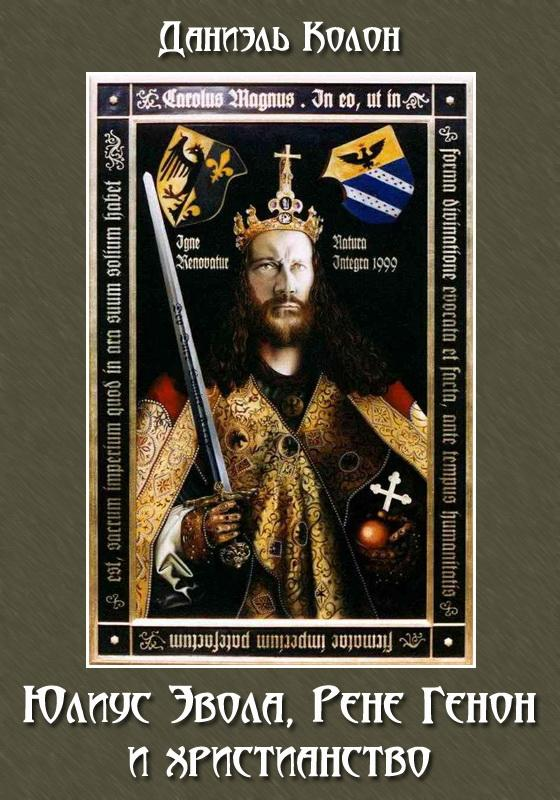

Данная книга позиционируется как серьёзное исследование связей Традиции и традиционного мышления (на примере воззрений двух важнейших мыслителей-традиционалистов) с христианством. Тема эта несомненно важна, т.к. многие адепты примордиальной Традиции отвергают христианство (это в своё время делал и Эвола, что нашло отражение в его ранней работе «Языческий империализм», которую он, к слову, впоследствии отказывался переиздавать). Некоторым людям мешает увидеть в христианстве Традицию текущее положение вещей в Церкви, иным – предубеждение перед «религией гонимых», якобы отрицающей многие принципы «правых». Но получилось ли у Даниэля Колона обосновать христианское учение как Традицию?
Считаю, что нет.
Главная ошибка автора кроется в самом подходе к проблеме: он рассматривает исключительно католичество и всеми силами пытается притянуть его к Изначальной Традиции. Это невозможно, поэтому исследователю и приходится делать допущения, оправдывать историческую форму католичества и, что преступно, модифицировать Изначальную Традицию (трансцендентное не зависит от времени и исторического контекста). Большая часть аргументов не убедили даже меня (а я a priori был на стороне автора). В результате работа является скорее оправданием приспособления католичества к миру, но не установлением его связи с Традицией.
Если бы автор не ограничивался католичеством, рыцарством и Эриугеной, но обратился бы и к гностическим писаниям, отвергнув суждение об их «еретичности», то смог бы привести текстологические доказательства положений Эволы и Генона (с работами последнего я знаком крайне мало, поэтому сосредоточусь на воззрениях «последнего кшатрия Традиции»). С помощью текстов и кодексов можно найти подкрепление следующим идеям. Фрагменты кодексов немногочисленны, т.к. они здесь – лишь намёк на идею, но не тщательная её проработка.
1. Миф об андрогине.
В день, когда Ева была в Адаме, не было смерти. Когда она отделилась от него, смерть появилась. Вновь, когда она войдет, и он примет ее в себя, смерти не будет. NHC 2,3:71
Христианству присуща концепция андрогинности изначального человека, но только в гностических текстах это постулируется буквально. И андрогинность – не только лишь прошлое человека, но и цель всей его духовной жизни: стать целым и целостным, обрести Полноту. Это сближает христианство и с традиционной идеей о предсуществовании и орфическом схождении души из Вечности.
Иисус увидел младенцев, которые сосали молоко. Он сказал ученикам своим: Эти младенцы, которые сосут молоко, подобны тем, которые входят в царствие. Они сказали ему: Что же, если мы – младенцы, мы войдем в царствие? Иисус сказал им: Когда вы сделаете двоих одним, и когда вы сделаете внутреннюю сторону как внешнюю сторону, и внешнюю сторону как внутреннюю сторону, и верхнюю сторону как нижнюю сторону, и когда вы сделаете мужчину и женщину одним, чтобы мужчина не был мужчиной и женщина не была женщиной, когда вы сделаете глазА вместо глАза, и руку вместо руки, и ногу вместо ноги, образ вместо образа, – тогда вы войдете в [царствие]. NHC 2,2:27
2. Дуализм
Эвола обвинял христианство в дуализме. Большего монотеизма, чем раннее христианство, не существует. Силы века сего не могут быть противниками Нерождённого, они даже скорее не злы, а невежественны. Не вижу смысла подробно останавливаться на этом достаточно обширном вопросе, все ключи к нему находятся в текстах библиотеки из Наг-Хаммади и в Апокрифе Иоанна в частности.
3. Инволюция
Вся христианская космогония и история эмпирической действительности строится на мифе об инволюции. Инволюция присуща Вечности: падение Софии, возникновение Демиурга, творение материии, и прослеживается во всех аспектах человеческого существования: разделение полов, возникновение смерти, страстей, влечения и проч.
В этом вопросе позиция гностиков также отлична от позиции ортодоксов: гностицизм полностью лишён онтологического доверия, мир, Космос, для гностика безусловно плох, поэтому его спасти невозможно в принципе и даже не имеет смысла. Инволюция будет продолжаться до тех пор, пока все части Вечности не возвратятся в Божесственную Полноту.
Иисус сказал: Тот, кто познал мир, нашел труп, и тот, кто нашел труп - мир недостоин его. NHC 2,2:61
4. Инициация
Говорящие, что умрут сначала и воскреснут, заблуждаются, ибо если они не примут воскресения сначала, живыми, когда умрут, не получат ничего. Так еще говорят о крещении, говоря, что велико крещение, ибо приняв его, они будут жить. NHC 2,3:90
Эвола отрицал инициатическое значение таинства крещения. Это отчасти справедливо в настоящее время. Крещение должно быть «от духа», только тогда оно может считаться инициацией. Но как бы то ни было, суть его именно инициатическая.
5. Метафизика пола.
По метафизике пола в христианстве можно написать не один десяток трудов, причём с точек зрения совершенно различных (например, в русской философии есть как Розанов, так и Бердяев, Соловьёв или Фёдоров).
Но гностическая точка зрения, во всяком случае, если судить по первоисточникам, вопреки ересиологам и отцам Церкви настаивает на падшести пола.
Пол напрямую связан с инволюцией; жизнь пола (в низшем смысле) есть расходование Мысли и питание падшего мира. И здесь Колон ошибается, признавая «буржуазный брак» элементом Традиции. Все движения, будь то воинские или орденские, граничащие с Традицией, отрицали брак в буржуазном смысле, который направлен на укоренение в жизни, на ослепление духа и в конечном счёте – на питание сансары путём бездумного и губительного воспроизводства.
Женщина последовала за землёй, и брак последовал за женщиной, рождение последовало за браком, уничтожение последовало за рождением. О происхождении мира, 52
Можно вспомнить аграфы из утерянного Евангелия Египтян, которое цитирует Климент Александрийский в «Строматах», где говорится то же самое, но слова уже вложены в Его уста:
«Когда Саломея спросила Господа: Как долго ещё смерть будет иметь силу? — Он ответил ей: До тех пор, пока женщины будут рожать детей» Strom. III.45
«Она говорит далее: Значит лучше мне не рожать детей? — Господь отвечает ей: Ешь каждое растение, кроме того, которое горькое» Strom. III.66
Брак же истинный — обретение первоначального состояния. Актуализирование микрокосма – снискание гениальности, если говорить языком Вейнингера.
60. Подобным образом [истинное бракосочетание]: если некто в таинстве, таинстве брака, он велик, ибо (без него] не будет мира. Ибо основа [мира - человек], основа же [человека - это брак]. Познайте [общение] неоскверненное, ибо оно обладает [великой] силой. Его образ существует в оскверненной форме.
122. Никто [не сможет] узнать, в какой [день мужчина] и женщина сочетаются друг с другом, кроме них самих. Ибо брак мира - это тайна для тех, кто взял женщину. Если брак оскверненный скрыт, насколько более брак неоскверненный тайна истинная? Он - не плотский, но чистый, он принадлежит не желанию, но воле. Он принадлежит не тьме и ночи, но принадлежит он дню и свету. Брак, если он обнажен, становится развратом, и невеста, не только если ее познает другой мужчина, но даже если она покидает ложе свое и ее видят, развращена. Да знает она только отца своего и мать свою, и друга жениха, и детей чертога брачного. Дано им проникать всякий день в чертог брачный. Но другие - да пожелают они лишь слышать голос ее (и) наслаждаться благовонием ее! И да насытятся они, как собаки, крохами, которые падают со стола. Женихи и невесты принадлежат чертогу брачному. Никто не сможет видеть жениха и невесту, если он [не] станет таковым. NHC 2,3
Я считаю, что слова эти совсем не только о браке души с Женихом, что представляет Церковь, но и об андрогинном союзе двоих.
Кстати, это полностью сходится с воззрением Н.Бердяева на социальность брака (очень жаль, что корпус кодексов не был доступен Бердяеву, ему пришлось самому восстанавливать миф; но в этом проявилась его гениальность). Любовь, т.е. дело двух личностей, не может быть социальной, она должна быть скрыта. Вообще, «брака по любви» не существует и не может существовать в принципе, само это понятие абсурдно.
Но как же христианин должен относиться к полу? Нам дан ответ:
62. Не бойся плоти и не люби ее. Если ты боишься ее, она будет господствовать над тобой. Если ты полюбишь ее, она поглотит тебя, она подавит тебя. Ibid.
Пол – данность этого мира, он ведёт к дурной бесконечности рождения и смерти. Но бежать от него – не выход, таким образом он станет противником, субстанцируется в отделённый от человека инстинкт, с которым будет сложно бороться. Необходимо преодолеть его, выйдя на иной уровень, где уже нет разделения.
В аутентичных текстах нет поддержки либертинистского этоса, о котором говорили критики гностицизма во втором веке, но некоторые современные гностики считают, что либертинизм -- если не прошлое, то возможное будущее гностицизма. Смею с этим не согласиться, да и путь левой руки всегда опаснее и скорее погубит практика, чем освободит его.
6. Иерархию я уже рассматривал в комментарии к «Антихристу» Ницше.
7. Аполитейя
Следующей важной для эволианства концепцией является Аполитейя, к которой, кстати, сам Эвола пришёл довольно поздно и после серьёзных занятий активной политикой. В конце концов он решил, что сейчас, в век Кали-Юги, политикой невозможно что-либо исправить: инволюция зашла слишком далеко, и Запад есть Восток, а демократия расчищает путь социализму, что мы в настоящий момент можем наблюдать на примере Западной Европы и США.
Аполитейя – единственно верная установка христианина по отношению ко власти. Мысль о том, что вся власть от Бога — это позднее воззрение, легитимизирущее диктатуру. Верное поведение при данном положении вещей – сохранение внутренней дистанции от всех сфер социальной и политической жизни, экономической машины и всех плодов «прогресса» и «свободы».
«Человеку особого типа» не нужна навязанная Законом «свобода от», пневматик, человек духовный – как, вполне согласно ницшеанскому духу, о нём сказал Ап. Павел, – сам себе закон.
8. Творчество
Животные и власти, которые сами звероподобны, не могут творить; творчество архонтов поражено неведением. Только у человека есть Мысль, которая позволяет создавать образы. И наша задача — вернуть Мысль обратно, а не питать ей материю. Бердяев был совершенно прав, утверждая творческий долг человека перед Богом. Поправлю Камю, писавшем в «Мифе о Сизифе», что творчество есть жизнь вдвойне: творчество – это и есть жизнь.
Всё это хорошо сочетается с идеей дегуманизации искусства (Хосе Отега-и-Гассет) в смысле очищения от пошлости, сентиментальности и аффективной чувственности и возвышения его до денатурализированной абстракции («Абстрактное искусство», Юлиус Эвола). Искусство, творчество должно базироваться не на натуре, должно перейти от изображения к выражению, как это – и наиболее чисто – явлено в музыке, которая очень редко изображает, но сама по себе, без всякого сообщения есть и смысл, и цель, и средство, без натуры и малейшей утилитарности.
Интересно сравнить воззрения апологетов абстракционизма (Кандинский, тот же Эвола и проч.) с катарским искусством. Катары украшали книги исключительно геометрическими орнаментами, т.к. всё тварное – не от Бога, поэтому оно не может выражать божественные сущности. Исключения они делали только для лилий и рыб, которые, как они считали, родятся из воды, а рыба ещё есть и символ Христа и христианства.
Таковы основные моменты, что я хотел отметить.
Среди прочих воззрений Колона можно встретить поразительную мысль::
Христианство — относительная новизна в общей структуре нынешней Манвантары.
И далее:
Христианство не является самой лучшей религией. Это лучшая религия лишь в обстоятельствах железного века, традиция, более приспособленная к крайне распущенной эпохе, где человечество потеряно в материальном хаосе и «царстве количества».
Отличный апологет! Моя позиция совершенно иная: традиции разных народов — лишь воспоминание об Изначальной Традиции. Об этом свидетельствует мифология и символика; каббала, а вместе с ней и теософия заимствовали идеи из гностических текстов и проч. Христианство — это не прерывание Традиции, как полагал Эвола, и не приспособление Традиции к мiру, как утверждает Колон, а восстановление Традиции. Христианство (но не его исторические формы) и есть Единая Традиция. Только и только оно.